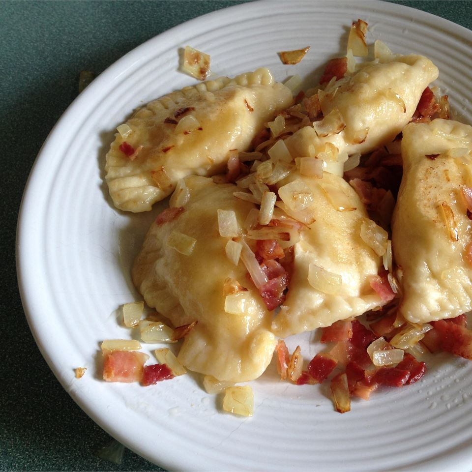

Pierogi~Pyrohy~Varenyky
This recipe, picked up from my Great-Grandmother's recipe book by my Nana, her daughter-in-law,
has become a staple in our family. My mother has been in charge of making the perogies for all
our holiday dinners for as long as I can remember, and I learned young how to effectively assemble
these delicious potato dumplings.
These are not your typical frozen cheddar and potato perogies you buy from the grocery store.
Instead, these perogies are made with a traditional potato dough wrapped around a cottage
cheese, onion, egg, and potato filling. Traditionally served boiled the first day, then
fried in butter and oil to reheat the leftovers, we boil and fry them the same day before serving.
This gives them a crunchy brown outer edge and a soft, cheezy center. Top them with sour cream,
fried onions, and bacon bits and serve at holidays to spice up the regular turkey and mashed potato fare.
Ingredients
Dough
- 3 cups mashed/riced potatos
- 3 eggs, beaten
- 4 cups all purpose flour
- 1/2 cup vegetable oil
- 1 tsp salt
Filling
- 1 potato, mashed/riced
- 1 medium onion, diced and fried
- 1 cup cottage cheese
- 1 egg, beaten
Toppings (optional)
- Sour cream
- Sauteed onion
- Crumbled bacon/bacon bits
Instructions
Filling
- Cook and mash potato, chop and fry onion and let cool.
- Mix all ingredients together, set aside in a container for later.
Dough
- After boiling and mashing potatoes, let cool.
- Add cooled potatoes to eggs and beat well. I like to use my kitchenaid mixer for the dough, but you can also do it by hand
- Add oil, beat well
- Mix salt into flour, add slowly to the potato mixture and knead by hand until combined
- Cover with a tea towel and rest for 1 hour before rolling out. The timing of this step is crucial, if rested too long the dough will be too elastic, not long enough and it will be too fragile.
- Roll out dough on lightly floured counter. Cut into squares or use a small cup to cut into circles.
- Fill with a spoonful of filling and fold the dough over the filling, pressing the edges into a triangle or semicircle dumpling. I use my fingers to press the edges together, but if you prefer the look you can use a forc to seal them as well.
- Arrange on floured cookie sheets and freeze until solid, then transfer to freezer bags. Keep frozen until you are ready to cook them.
Cooking Instructions
- Bring a large pot of water to a boil. Heat a pan for frying and add a generous amount of butter and vegetable oil.
- Place 2-3 frozen perogies in the boiling water at a time. When they float, they are cooked. Use a slotted spoon to transfer them to the frying pan or a colander if your pan is full.
- Fry on each side until golden and crispy. Transfer to a casserole dish and cover with a lid to keep warn until ready to serve.
- Serve with sour cream, sauteed onions, and bacon bits.